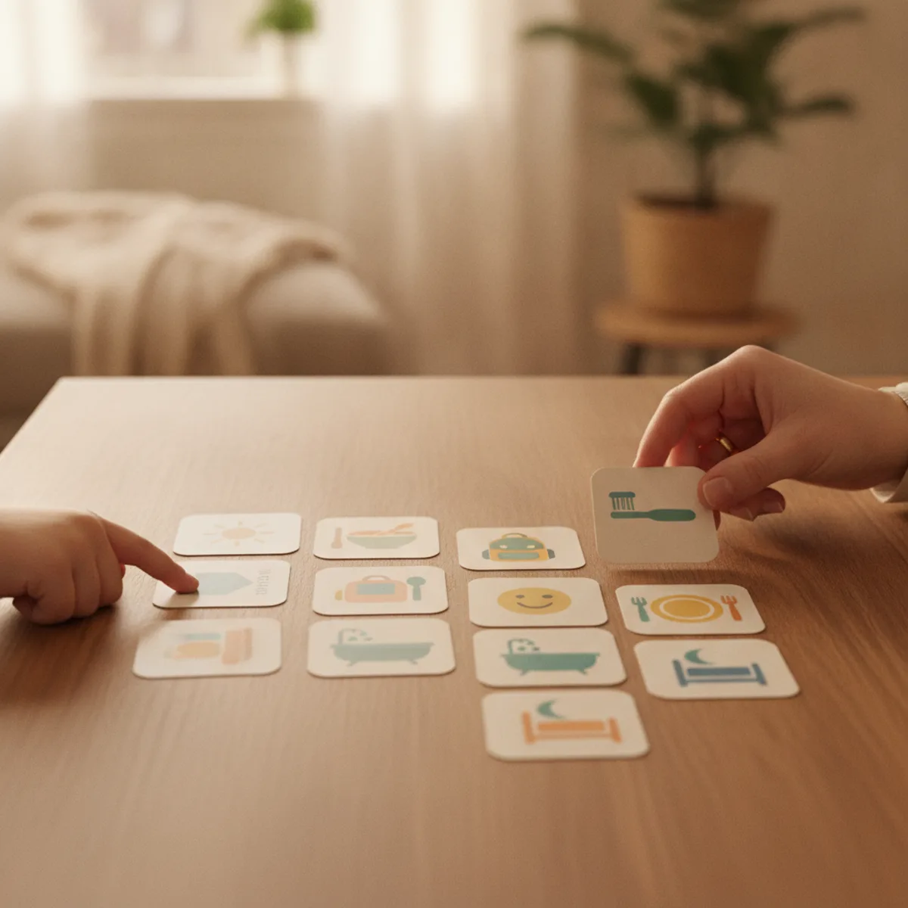
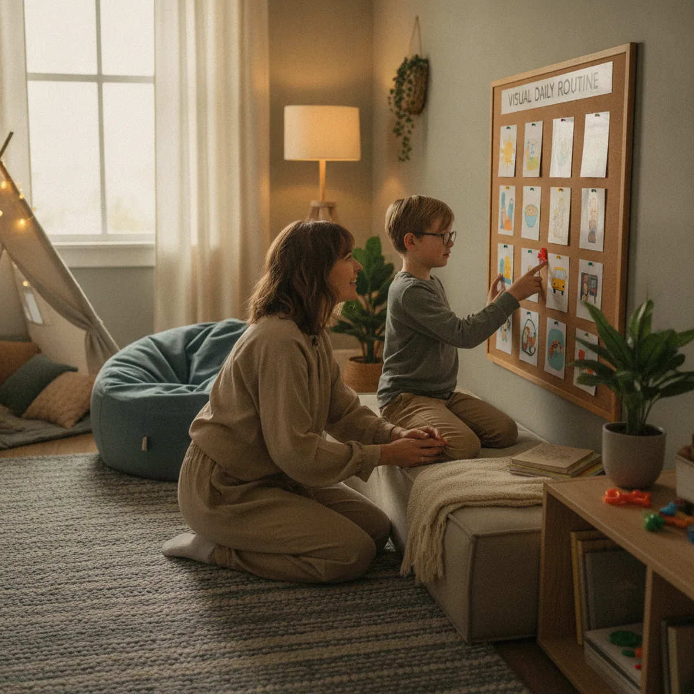

Jadwal visual anak autis adalah alat bantu sederhana yang dapat membuat rutinitas anak lebih jelas, tenang, dan mudah diprediksi. Bagi anak autis, perubahan mendadak, instruksi verbal panjang, atau kegiatan yang tidak memiliki akhir jelas dapat terasa membingungkan. Jadwal visual membantu anak melihat urutan kegiatan, memahami apa yang diharapkan, dan belajar menyelesaikan aktivitas satu per satu.
Artikel ini membahas manfaat jadwal visual, tanda anak membutuhkannya, cara membuatnya di rumah dan sekolah, contoh rutinitas, kesalahan umum, serta FAQ praktis. Topik ini berbeda dari panduan terapi musik untuk ABK karena fokusnya bukan pada musik atau stimulasi auditori, melainkan pada dukungan visual untuk struktur harian, transisi, komunikasi, dan kemandirian.
Di rumah dan sekolah inklusi seperti lingkungan YUKA Indonesia, jadwal visual dapat dipakai untuk rutinitas sederhana maupun target belajar yang lebih terstruktur. Panduan ini kami susun untuk membantu orang tua, guru, dan pendamping menerapkan jadwal visual dengan cara yang konsisten, lembut, dan menghargai kebutuhan setiap anak.
Daftar Isi
Apa Itu Jadwal Visual Anak Autis?
Jadwal visual anak autis adalah alat bantu yang menampilkan urutan kegiatan melalui gambar, foto, simbol, tulisan, benda nyata, atau kombinasi beberapa bentuk visual. Anak dapat melihat rangkaian aktivitas dari awal sampai akhir, misalnya bangun tidur, mandi, berpakaian, sarapan, berangkat sekolah, belajar, bermain, makan siang, istirahat, lalu pulang. Bagi banyak anak dengan spektrum autisme, informasi yang terlihat sering lebih mudah dipahami daripada instruksi verbal yang panjang dan cepat berubah.
Autism Spectrum Disorder atau autisme memengaruhi cara anak berkomunikasi, berinteraksi, memahami lingkungan, dan merespons perubahan. Kementerian Kesehatan RI menjelaskan bahwa autisme berkaitan dengan tantangan interaksi sosial, komunikasi verbal maupun nonverbal, serta perilaku terbatas dan berulang. Dalam kehidupan sehari-hari, tantangan ini bisa muncul sebagai kesulitan memahami apa yang diharapkan orang dewasa, sulit berpindah dari satu kegiatan ke kegiatan lain, atau cemas saat rutinitas berubah mendadak.
Jadwal visual bukan sekadar hiasan di dinding kelas. Ia adalah jembatan komunikasi. Anak tidak hanya mendengar kalimat "sebentar lagi mandi", tetapi juga melihat gambar mandi setelah gambar bermain. Anak tidak hanya diminta "tunggu dulu", tetapi bisa melihat bahwa setelah menunggu akan ada kegiatan yang disukai. Karena urutan kegiatan menjadi konkret, anak punya pegangan untuk memahami waktu, transisi, dan batas aktivitas.
Di rumah dan sekolah inklusi seperti lingkungan YUKA Indonesia, jadwal visual dapat dipakai untuk rutinitas sederhana maupun target belajar yang lebih terstruktur. Orang tua bisa memakainya untuk jadwal pagi, waktu makan, toilet training, belajar mandiri, waktu ibadah, sampai persiapan tidur. Guru dapat menggunakannya untuk kegiatan kelas, pergantian mata pelajaran, aturan bermain, dan langkah pengerjaan tugas. Bentuknya tidak harus mahal. Foto nyata dari rumah, gambar sederhana, kartu bergambar, stiker, atau tulisan pendek sudah cukup jika sesuai dengan pemahaman anak.
Inti Singkat
Jadwal visual adalah alat bantu berupa gambar, foto, tulisan, atau benda nyata yang menunjukkan urutan kegiatan anak. Tujuannya membantu anak memahami apa yang sedang dilakukan, apa yang akan terjadi setelahnya, dan kapan sebuah kegiatan selesai.
Manfaat Jadwal Visual untuk Rutinitas dan Kemandirian
Manfaat utama jadwal visual adalah memberi prediktabilitas. Banyak anak autis merasa lebih aman ketika mengetahui apa yang akan terjadi. Ketika kegiatan digambarkan secara berurutan, dunia terasa lebih dapat ditebak. Anak tidak perlu menebak-nebak kapan bermain selesai, kapan mandi dimulai, atau kapan harus masuk kelas. Prediktabilitas ini membantu menurunkan kecemasan, terutama pada anak yang sensitif terhadap perubahan.
Manfaat kedua adalah membantu transisi. Perpindahan aktivitas sering menjadi momen sulit. Anak yang sedang menikmati mainan bisa marah ketika tiba-tiba diminta berhenti. Dengan jadwal visual, transisi disiapkan lebih awal. Anak melihat bahwa setelah bermain ada makan, setelah makan ada sikat gigi, dan setelah sikat gigi ada cerita sebelum tidur. Visual membuat perubahan tidak terasa mendadak. Pendamping tetap perlu memberi jeda, tetapi gambar membantu anak memahami alasan perubahan tersebut.
Manfaat ketiga adalah meningkatkan kemandirian. Anak dapat belajar mengecek jadwal, mengambil kartu kegiatan, memindahkan kartu ke bagian "selesai", atau mengikuti langkah sederhana tanpa terus menerus diingatkan secara verbal. Kemandirian ini penting karena anak tidak selalu berada bersama orang tua. Di sekolah, anak perlu memahami rutinitas kelas. Di rumah, anak perlu belajar mengurus diri sesuai kemampuan. Jadwal visual melatih anak melihat petunjuk, mengikuti urutan, dan merasa berhasil menyelesaikan tugas kecil.
Manfaat keempat adalah mendukung komunikasi. Sebagian anak sulit menjelaskan kebutuhan dengan kata-kata. Jadwal visual dapat dilengkapi papan pilihan, misalnya gambar minum, toilet, istirahat, pelukan, atau mainan favorit. Anak bisa menunjuk gambar untuk menyampaikan kebutuhan. Bagi anak yang sudah verbal, visual tetap membantu memperjelas percakapan. Orang tua dapat bertanya, "Sekarang gambar apa?" lalu anak menjawab atau menunjuk. Interaksi menjadi lebih tenang karena pesan tidak hanya mengandalkan suara.
Manfaat kelima adalah membantu pencatatan perkembangan. Ketika jadwal digunakan konsisten, orang tua dan guru dapat melihat pola. Kegiatan mana yang mudah diikuti? Kegiatan mana yang memicu penolakan? Apakah anak lebih tenang jika jadwal pagi memakai foto nyata? Apakah anak lebih paham jika jumlah kartu dikurangi? Data kecil seperti ini dapat dibawa saat diskusi dengan guru, terapis okupasi, terapis wicara, psikolog, atau dokter tumbuh kembang.
Kapan Anak Membutuhkan Jadwal Visual?

Jadwal visual dapat dipertimbangkan ketika anak sering tampak bingung menghadapi rutinitas. Misalnya anak tidak paham mengapa harus mandi sebelum sekolah, mengapa main berhenti ketika makan sudah siap, atau mengapa setelah pulang harus menyimpan tas. Kebingungan ini kadang terlihat seperti tidak patuh, padahal anak belum memahami urutan dan ekspektasi. Visual membantu mengubah instruksi abstrak menjadi petunjuk yang bisa dilihat.
Anak juga bisa membutuhkan jadwal visual ketika sering cemas menghadapi perubahan. Contohnya, guru pengganti masuk kelas, kegiatan luar ruangan dibatalkan karena hujan, atau keluarga harus pergi ke tempat baru. Untuk situasi seperti ini, jadwal visual dapat dilengkapi kartu "perubahan" atau "rencana baru". Anak tetap mungkin kecewa, tetapi ia mendapat penjelasan konkret bahwa urutan hari ini berbeda. Pendamping bisa menunjukkan perubahan sambil memakai suara tenang.
Jadwal visual sangat berguna untuk anak yang sulit berpindah aktivitas. Transisi dari bermain ke belajar, dari layar gawai ke mandi, atau dari rumah ke sekolah sering menjadi titik rawan. Dalam kondisi ini, gunakan jadwal bersama penanda waktu seperti timer, lagu transisi, atau hitungan mundur. Misalnya, "Lima menit lagi selesai bermain. Setelah itu gambar mandi." Anak belajar bahwa kegiatan favorit tidak hilang tanpa pemberitahuan, melainkan berganti sesuai urutan.
Jadwal visual juga cocok untuk anak yang sedang belajar activity of daily living, seperti mencuci tangan, memakai baju, membereskan mainan, atau menyiapkan tas. Untuk tugas seperti ini, jadwal tidak harus berbentuk daftar harian. Bisa berupa urutan langkah: basahi tangan, ambil sabun, gosok telapak, bilas, keringkan. Jika anak sudah mampu mengikuti tiga langkah, tambahkan langkah berikutnya perlahan. Prinsipnya adalah memecah kegiatan besar menjadi bagian kecil yang terlihat jelas.
Namun, jadwal visual bukan solusi tunggal untuk semua perilaku. Jika anak sering menangis, melukai diri, sangat sulit tidur, kehilangan kemampuan yang sudah dikuasai, atau menunjukkan perubahan perilaku mendadak, keluarga perlu berkonsultasi dengan profesional. Jadwal visual dapat menjadi bagian dari dukungan, tetapi asesmen medis, psikologis, sensori, komunikasi, dan lingkungan tetap penting.
Cara Membuat Jadwal Visual yang Mudah Dipakai

Langkah pertama adalah memilih satu rutinitas kecil. Jangan langsung membuat jadwal satu hari penuh jika anak belum pernah memakai visual. Mulailah dari kegiatan yang sering menimbulkan konflik, misalnya rutinitas pagi atau persiapan tidur. Pilih dua sampai empat gambar saja. Contoh rutinitas pagi: mandi, pakai baju, sarapan, berangkat. Untuk anak yang masih sangat muda atau belum memahami gambar, gunakan foto nyata dari kamar mandi, pakaian anak, meja makan, dan tas sekolah.
Langkah kedua adalah memilih bentuk visual sesuai kemampuan anak. Anak yang belum memahami simbol abstrak biasanya lebih mudah memakai benda nyata atau foto. Anak yang sudah mengenali gambar dapat memakai kartu ilustrasi. Anak yang sudah bisa membaca dapat memakai kata sederhana, misalnya "mandi", "makan", "belajar", dan "istirahat". Hindari gambar yang terlalu ramai. Satu kartu sebaiknya mewakili satu kegiatan, bukan banyak informasi sekaligus.
Langkah ketiga adalah menentukan tempat jadwal. Tempatkan jadwal di lokasi yang sering dilihat anak, misalnya dekat pintu kamar, meja belajar, kulkas, atau sudut kelas. Jadwal yang disimpan di laci biasanya tidak terpakai. Jika anak banyak bergerak, buat versi portabel dengan gantungan kecil, map, atau papan lipat. Di sekolah, guru bisa menempel jadwal kelas di area yang mudah dijangkau anak, bukan hanya di papan tulis yang jauh.
Langkah keempat adalah mengajarkan cara memakai jadwal. Orang dewasa perlu menunjuk gambar sambil memberi instruksi singkat. Misalnya, "Sekarang mandi. Setelah mandi, pakai baju." Setelah selesai, ajak anak memindahkan kartu ke area "selesai". Jangan hanya menempel jadwal lalu berharap anak langsung paham. Visual adalah alat bantu yang perlu diajarkan, diulang, dan diberi makna melalui rutinitas sehari-hari.
Langkah kelima adalah memberi penguatan. Ketika anak mau melihat jadwal, mengikuti satu langkah, atau memindahkan kartu selesai, beri apresiasi yang sesuai. Apresiasi tidak selalu berupa hadiah. Bisa berupa pujian spesifik, senyum, tos, pilihan aktivitas singkat, atau jeda istirahat. Katakan, "Bagus, kamu lihat jadwal. Sekarang sudah selesai mandi." Pujian spesifik membantu anak memahami perilaku apa yang diharapkan.
Langkah keenam adalah mengevaluasi dan menyederhanakan. Jika anak menolak jadwal, jangan langsung menyimpulkan bahwa visual tidak cocok. Mungkin gambar terlalu banyak, urutan terlalu panjang, ukuran terlalu kecil, atau anak belum memahami simbolnya. Kurangi jumlah kartu, pakai foto nyata, letakkan lebih dekat, atau mulai dari kegiatan yang sangat disukai anak. Jadwal yang baik adalah jadwal yang dipakai, bukan jadwal yang paling cantik.
Contoh Jadwal Visual di Rumah dan Sekolah
Contoh pertama adalah rutinitas pagi di rumah. Susun kartu dengan urutan bangun, toilet, mandi, pakai baju, sarapan, sikat gigi, ambil tas, berangkat. Untuk pemula, cukup tampilkan empat kartu pertama. Setelah anak terbiasa, tambahkan kartu berikutnya. Orang tua dapat menempel jadwal di dekat kamar atau ruang keluarga. Jika anak berhasil menyelesaikan satu langkah, pindahkan kartu ke area selesai agar ia melihat progresnya.
Contoh kedua adalah rutinitas belajar. Gunakan urutan duduk, buka buku, kerjakan satu halaman, istirahat, rapikan alat. Anak autis sering lebih mudah fokus ketika tugas dibatasi dengan jelas. Daripada berkata "belajar sampai selesai", gunakan kartu atau daftar visual yang menunjukkan jumlah tugas. Misalnya satu lembar kerja, tiga soal, atau sepuluh menit membaca. Batas yang jelas mengurangi rasa kewalahan.
Contoh ketiga adalah transisi dari layar gawai. Buat kartu "nonton", "timer", "selesai", "pilih aktivitas lain". Lima menit sebelum selesai, tunjukkan kartu timer. Ketika timer berbunyi, bantu anak memindahkan kartu nonton ke area selesai. Setelah itu tunjukkan pilihan aktivitas lain, misalnya balok, menggambar, membaca buku, atau bermain di halaman. Transisi tetap perlu latihan, tetapi visual memberi struktur yang lebih adil daripada mengambil gawai tiba-tiba.
Contoh keempat adalah jadwal kelas. Guru dapat menampilkan urutan doa, circle time, belajar angka, snack, motorik kasar, cerita, pulang. Jika ada perubahan, gunakan kartu khusus "perubahan hari ini". Untuk anak yang sulit menunggu, tambahkan kartu "menunggu" dan "giliran saya". Kelas inklusi yang memakai visual tidak hanya membantu anak autis, tetapi juga anak lain yang membutuhkan struktur.
Contoh kelima adalah kegiatan ibadah dan nilai keluarga. Di keluarga muslim, visual bisa membantu rutinitas wudhu, shalat, mengaji, atau persiapan ke masjid sesuai usia dan kemampuan anak. Gunakan bahasa yang lembut. Tujuannya bukan memaksa anak langsung sempurna, tetapi membangun rasa aman, kebiasaan baik, dan pemahaman bertahap. YUKA Indonesia menempatkan pendidikan inklusi dalam suasana hangat dan bernilai, sehingga visual dapat menjadi alat untuk mendampingi anak dengan kasih sayang.
Contoh keenam adalah jadwal kunjungan ke tempat baru. Sebelum pergi ke dokter, sekolah baru, terapi, atau acara keluarga, buat cerita visual singkat. Tampilkan foto tempat, kendaraan, orang yang akan ditemui, kegiatan utama, dan kapan pulang. Anak yang tahu gambaran perjalanan biasanya lebih siap. Jika perubahan tetap terjadi, gunakan kartu "rencana berubah" lalu jelaskan satu langkah berikutnya dengan kalimat pendek.
Hubungkan Jadwal Rumah dan Sekolah
Jadwal rumah dan sekolah sebaiknya saling terhubung. Jika anak memakai visual schedule di kelas, tanyakan formatnya kepada guru agar versi rumah tidak terlalu berbeda. Konsistensi format antara rumah, sekolah, dan sesi terapi membuat anak lebih mudah memahami dan menggunakan jadwalnya.
Kesalahan yang Perlu Dihindari
Kesalahan pertama adalah membuat jadwal terlalu panjang. Orang tua sering bersemangat lalu menempel belasan gambar sekaligus. Bagi anak yang baru belajar, ini bisa terasa membingungkan. Mulailah kecil. Jadwal dua gambar seperti "makan dulu, lalu bermain" sering lebih efektif daripada papan besar yang memuat seluruh hari. Setelah anak paham, baru tingkatkan kompleksitas.
Kesalahan kedua adalah mengganti format terlalu sering. Hari ini memakai foto, besok memakai ikon, lusa memakai tulisan. Anak yang membutuhkan konsistensi dapat bingung jika format berubah tanpa transisi. Pilih satu format utama, gunakan beberapa minggu, lalu evaluasi. Jika perlu mengganti, lakukan bertahap. Misalnya tempel foto dan kata bersamaan sebelum beralih ke tulisan.
Kesalahan ketiga adalah memakai visual sebagai ancaman. Kalimat seperti "kalau tidak ikut jadwal, tidak boleh main" membuat jadwal terasa menekan. Jadwal visual seharusnya menjadi alat bantu memahami rutinitas, bukan alat hukuman. Jika anak menolak, cari penyebabnya. Mungkin anak sedang lelah, lapar, sensori overload, atau belum siap menghadapi transisi. Respons pendamping tetap perlu tenang dan penuh empati.
Kesalahan keempat adalah tidak melibatkan anak. Jika memungkinkan, ajak anak memilih gambar, menempel kartu, atau menentukan warna papan. Anak yang merasa memiliki jadwal biasanya lebih mau menggunakannya. Untuk anak yang punya minat khusus, gunakan elemen kecil dari minat tersebut sebagai motivasi, selama tidak membuat jadwal menjadi terlalu ramai.
Kesalahan kelima adalah mengabaikan kolaborasi. Jadwal rumah dan sekolah sebaiknya saling terhubung. Jika anak memakai visual schedule di kelas, orang tua bisa bertanya formatnya agar rumah tidak terlalu berbeda. Jika anak sedang menjalani terapi okupasi atau terapi wicara, diskusikan apakah visual dapat mendukung target komunikasi, regulasi sensori, atau kemandirian. Kolaborasi membuat strategi lebih konsisten dan lebih mudah dipahami anak.
Kesalahan keenam adalah berharap hasil instan. Sebagian anak langsung tertarik pada gambar, tetapi sebagian lain butuh waktu. Visual support memerlukan pengajaran, repetisi, dan penyesuaian. Ukur kemajuan kecil, seperti anak mau melihat kartu, tidak langsung marah saat transisi, mampu mengikuti satu langkah, atau mulai menunjuk gambar kebutuhan. Kemajuan kecil yang konsisten adalah fondasi kemandirian jangka panjang.
FAQ Jadwal Visual Anak Autis
1. Apa itu jadwal visual anak autis?
Jadwal visual anak autis adalah alat bantu berupa gambar, foto, tulisan, benda nyata, atau kombinasi beberapa media untuk menunjukkan urutan kegiatan anak. Tujuannya membantu anak memahami apa yang sedang dilakukan, apa yang akan terjadi setelahnya, dan kapan sebuah kegiatan selesai.
2. Apakah jadwal visual hanya untuk anak yang belum bisa bicara?
Tidak. Jadwal visual bisa membantu anak yang belum verbal, anak yang sudah berbicara, remaja, bahkan orang dewasa autis. Bentuknya tinggal disesuaikan dengan kemampuan membaca, pemahaman simbol, dan kebutuhan rutinitas masing-masing anak.
3. Kapan orang tua perlu mulai menggunakan jadwal visual?
Orang tua bisa mulai ketika anak sering bingung menghadapi rutinitas, sulit berpindah aktivitas, sering cemas saat ada perubahan, atau membutuhkan bantuan memahami instruksi. Tidak perlu menunggu anak benar-benar besar, karena jadwal sederhana bisa dibuat dari foto aktivitas harian.
4. Apakah jadwal visual bisa mengurangi tantrum?
Jadwal visual dapat membantu mengurangi sebagian tantrum yang dipicu kebingungan, transisi mendadak, atau instruksi yang tidak dipahami. Namun, tantrum juga bisa dipengaruhi kelelahan, lapar, sensori overload, sakit, atau kebutuhan komunikasi lain, jadi penyebabnya tetap perlu diamati.
5. Berapa banyak gambar yang sebaiknya dipakai dalam satu jadwal?
Untuk pemula, gunakan dua sampai empat gambar saja agar anak tidak kewalahan. Setelah anak memahami konsep urutan, jumlah gambar bisa ditambah perlahan menjadi jadwal pagi, jadwal belajar, atau jadwal pulang sekolah.
6. Apakah jadwal visual perlu dibuat oleh terapis?
Terapis, guru, atau psikolog dapat membantu memilih format yang tepat, tetapi orang tua tetap bisa membuat jadwal visual sederhana di rumah. Kuncinya adalah konsisten, memakai gambar yang mudah dikenali anak, dan mengajarkan cara menggunakan jadwal secara bertahap.
Baca Juga Artikel Terkait:
Sumber Resmi & Referensi Authoritative
Konten artikel ini diperkuat dengan referensi dari lembaga resmi pemerintah dan organisasi authoritative:
- Kementerian Kesehatan RI: Tentang Autisme ayosehat.kemkes.go.id
- Autism Speaks: Visual Supports autismspeaks.org
- Indiana Resource Center for Autism: Using Visual Schedules iidc.indiana.edu
- PMC: Studi tentang Visual Support di Rumah pmc.ncbi.nlm.nih.gov
Disclaimer Medis & Pendidikan: Artikel ini bersifat edukasi umum dan bukan pengganti konsultasi profesional. Untuk diagnosis, asesmen, atau penanganan anak berkebutuhan khusus, silakan konsultasikan langsung dengan dokter anak, psikiater anak, psikolog perkembangan, terapis okupasi, atau tenaga ahli pendidikan khusus yang berlisensi. YUKA Indonesia mendukung pendekatan multidisiplin dan tidak menggantikan peran tenaga medis maupun terapis profesional.